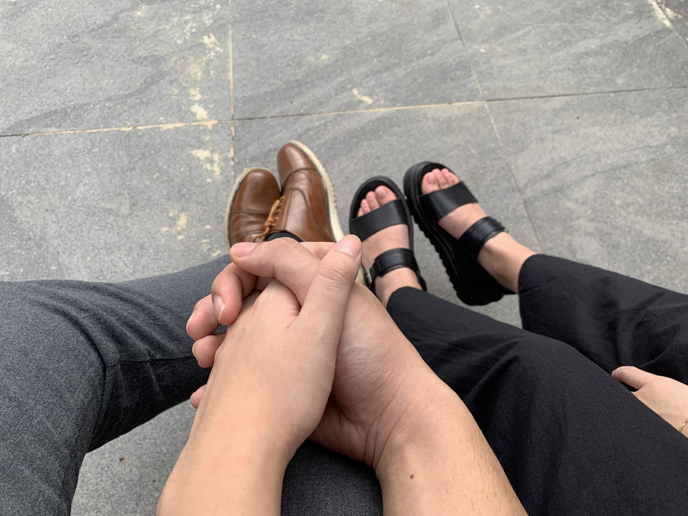

We are on our 3rd month into our relationship and honestly, it feels like we'd been together for a long time. It still got me thinking and wondering sometimes that we're actually together and that we're actually in love. That Reese and Kosei from Mabolo ward actually got together. I bet no one saw this coming, of course except kuya Shelly hahahaha
I am making this little website for you so that whenever you may wonder why I love you, it's out here on the web for you to access and see anytime and anywhere.
Before I say the reasons, I just want to leave a message for you. This relationship has been of the greatest thing that ever happened to me. You have sparked something in me that makes me want to do better and be better. I realized something as I pondered, that never had I worked so hard on myself in getting better ever in my life ever since the mission. Then I realized, that I truly love you. You have sparked love in me.
Can't you believe it? It's been almost a month since we got in a long distance relationship. The past month wasn't easy at all for both of us. As we go deeper into our relationship, we get to know each other more and that includes some parts of ourselves that are different from one another may it be our unique traits or weakness that you and I both have. We are starting to discover some differences that you and I both have. I know this is part of a relationship where we have to workout both of our differences. Honestly, I hope a relationship is all about butterflies and rainbows but we know that a relationship is more than that. I am glad Reese that it's you. I am happy that I am with you. I am happy to work out these difference with you. I am thankful for your kindness, patience, understanding and your love and charity that makes us possible to workout this relationship. Thank you for everything that you do for me and us. I can't thank you enough. Thank you for loving me despite my mistakes, weakensses and shortcomings.I hope we can continue to workout this relationship. I know there will more rocks and mountains ahead but I am know that we can overcome it because I am with you.
Dear, I love you. I love you so much. You are very dear to me, I care about you. You are always in my thoughts. I pray for you always. I wish you the best and I wish you happiness and success. I am happy that you are in school, I am here to support you in your dreams, goals and wishes. I am here with you, always.
When I met you (from your mission) and got to know you, I saw this light within you. You are an amazing and beautiful soul. This light within you that wants to improve, grow, be better and strive. captured my heart. From the time you said that you jogged and exercise, to striving to live the gospel, to making big and small goals, to dream to become sucessful, to have a good educatiom, to want to be a mother in Zion and now that you are in college and I can see that you really work hard and strive your best to achieve. This light has indeed warmed and enlightened my soul. I am in love with this part of you so much. It attracts me, it makes me also want to be better and want to be succesful. It inpires me and it radiates everyday in my life.
Before, I was always scared of showing my crushes of who I turly am. I am scared to show that I am this weird, animated and exaggerated boy. I used to pretend that I am a different person. But when I am with you, I can be myself. I feel comfortable and I feel at home. I can show you parts of my ugly side and I can be vulnerable and open with you. I feel safe and accepted when I am with you. Thank you for loving me that way that I am. Thank you for accpeting me despite my weaknesses. This leads me to my 3rd point.

Dear, one of the reasons why I love you is that you see the good in me. As you may know, I am harsh to myself. I am unkind to myself because of my weaknesses, sometimes I hate myself because I have this ugly parts of me. I remember that night, when we got into a relationship. I asked you what you thought and feel about me. You said that I was kind to the people around me and that you saw me that I was trying my best to strive. You saw a part of me that I never saw and others never saw too. I felt that I was appreciated, I felt that I was seen and that is a special feeling for me. Thank you for seeing that. Thank you for believing in me and seeing past my weaknesses. I will continue to do my best to be better.

Dear, you are very beautiful and pretty. Everytime I look at you, I fall in love (I am not kidding and exaggerating) For real, everytime I see you, there is always the pluck of a string in my heart that makes me kilig HAHHHAHA like what I said last time, you become more beautiful everyday. You bright eyes, you smile with your lips and white teeth HAHAHHA, your cheeks, your forehead that I love to kiss and my favorite of all, your nose. Dear you are indeed beatiful. And more than that, you are a beatiful soul. You are mature and wise. I still can't believe you're 21. When I was 21, omygoodness, I wasn't in the same thinking as you are. You are considerate, kind, compassionate, wise and just soo amazing jud. You are indeed beautful.

Dear, I love you because I do. That's it. I don't know if I need a reason to love you. That's it, I love you. I love you for everything. For all that you were, are and will be. I accept you. I love you, I just do. It's something that I cannot fully explain. I can, but I don't know if a whole website is ready for that HAHAHA Reese, again, you have been one of the most beautiful thing that ever happened in my life. I love you now and forever. I wanna be with you. I wanna see you everyday. I wanna go home everyday to you. I want to be loved and embraced by you. I know this is selfish for me to say that butI want you and I need you. I love you and I want to serve you, to care for you, to be there for you both in good times and MOST especially in the tough and bad times. I love you dear and the reason why it's just, I do.
click on the our cute photo hehe
Click on my beatiful and pogi face HAHAHA